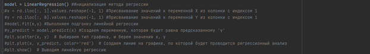
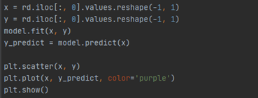
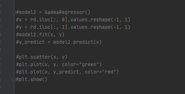
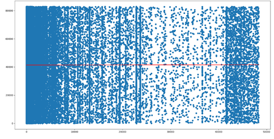
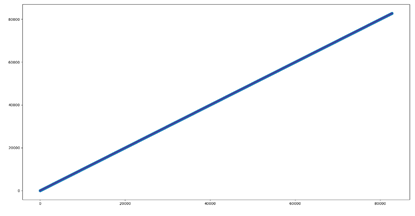
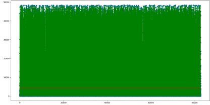

Часть 1.1 Гиперпараметрическая оптимизация модели.
Подключаем библиотеку sklearn.
Она предназначена для машинного обучения. В ней реализованы методы разбиения датасета на тестовый и обучающий.
Для сравнения необходимо инициализировать модель линейной регрессии. Затем присвоить значение к переменным X и Y. Далее выполнить подгонку линейной регрессии . Создаем переменную, которая будет равна y.
.
Повторяем тоже самое только с другими значениями.
.
.
Часть 1.2 Прогноз классификации для тестовой выборки.
Выбираем тип графика и берем значения x,y. Создаем линию на графике, по которой будет проводится регрессионный анализ. Далее выводим регрессию.
.
.
